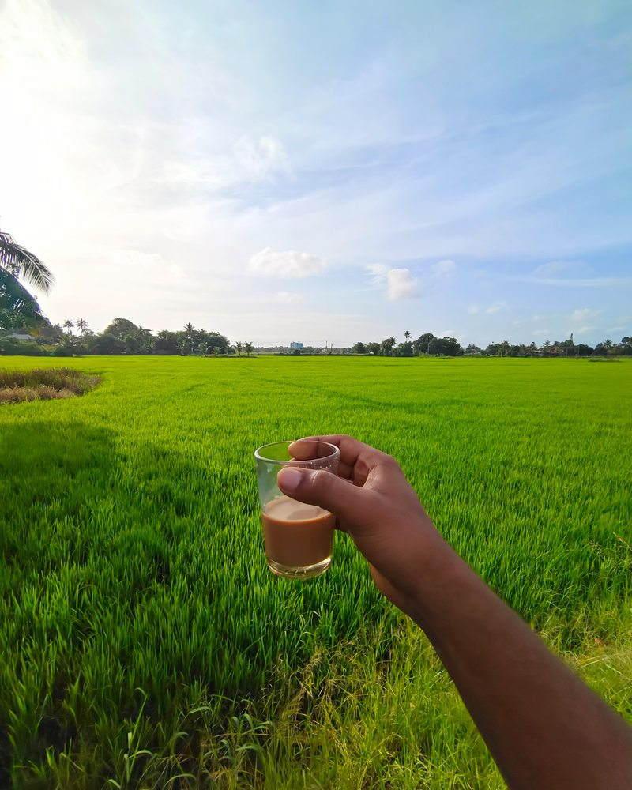

Travel / THE PERSONAL ARCHIVE
A cup and a field
A hand holding a glass of tea above a vivid green field.
- Place
- Location not published
- Camera
- Camera details not recorded
- Archive
- eyesofnydh personal collection

Travel / THE PERSONAL ARCHIVE
A hand holding a glass of tea above a vivid green field.
KEEP LOOKING